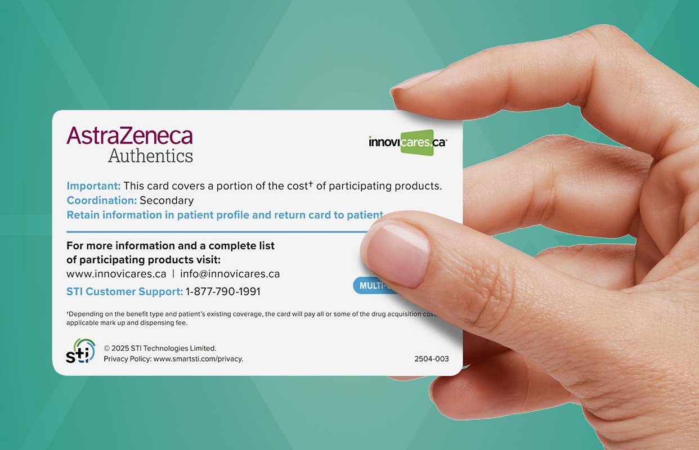
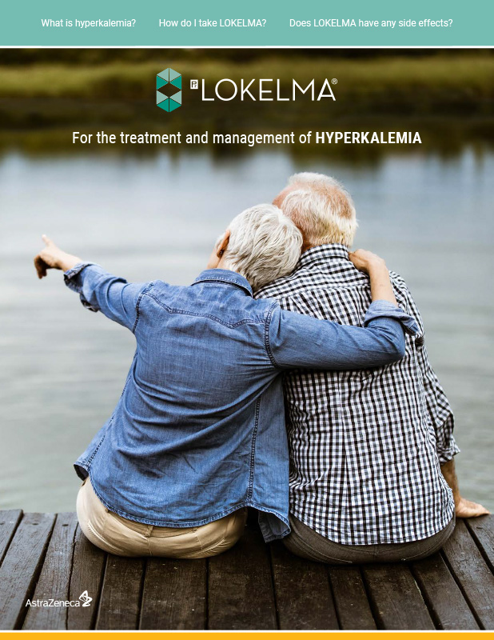
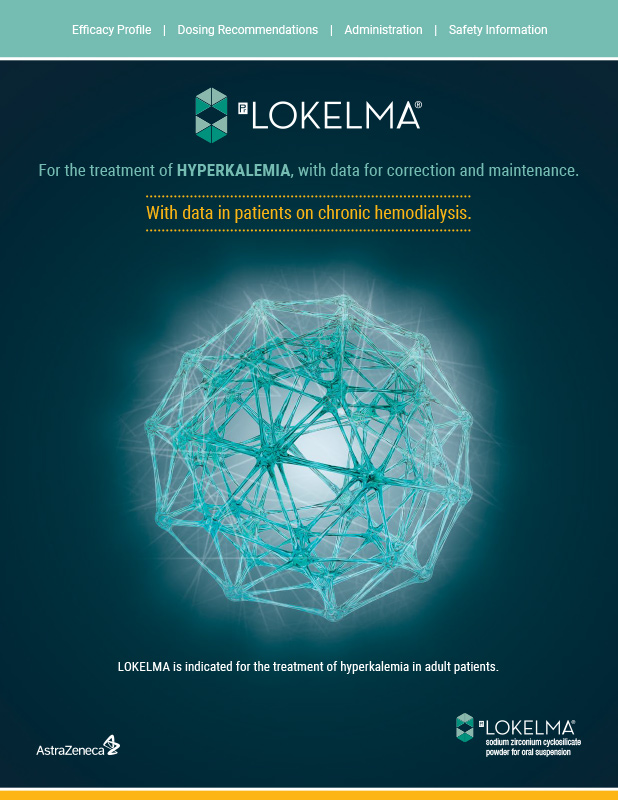
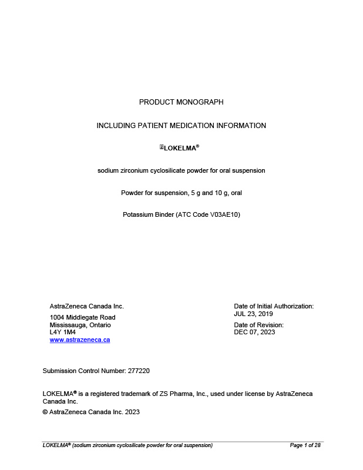
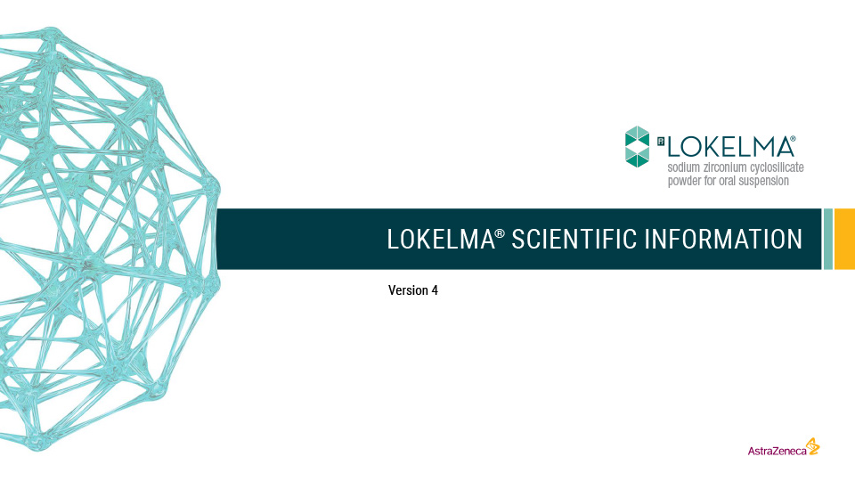

Resources
Hero Banner

Resources
Page Title
Explore LOKELMA resources for patients and HCPs
Payment Assistance Card
Payment Assistance Card
The AstraZeneca Authentics Program provides financial assistance designed to help LOKELMA patients save on their prescription costs. AstraZeneca Authentics provides a free Prescription Savings Card that will cover a portion of the price and can be used in conjunction with their private or public health plans.
2 easy steps to help patients save on LOKELMA: (columns-resources)
2 easy steps to help patients save on LOKELMA:
1. Patient can download their free Prescription Savings Card
2. Ask your patient to present their Prescription Savings card with their LOKELMA prescription at their pharmacy
Patient Website
1. Patient can download their free Prescription Savings Card
2. Ask your patient to present their Prescription Savings card with their LOKELMA prescription at their pharmacy
Patient Website

Patient Tear Sheet (columns-resources)

Patient Tear Sheet
An easy-to-understand resource to help patients learn about hyperkalemia, LOKELMA treatment, how to take it, and what to expect during therapy.
Download
An easy-to-understand resource to help patients learn about hyperkalemia, LOKELMA treatment, how to take it, and what to expect during therapy.
Download
Dose Card (columns-resources)
Dose Card
A quick-reference guide containing dosing information, clinical data for LOKELMA in correction and maintenance phases and data for patients on chronic hemodialysis.
Download
A quick-reference guide containing dosing information, clinical data for LOKELMA in correction and maintenance phases and data for patients on chronic hemodialysis.
Download

Product Monograph (columns-resources)

Product Monograph
Browse the Product Monograph to learn about LOKELMA efficacy, safety and dosing information.
Download
Browse the Product Monograph to learn about LOKELMA efficacy, safety and dosing information.
Download
LOKELMA Data Resource (columns-resources)
LOKELMA Data Resource
Take a deeper dive into the LOKELMA clinical trial program, efficacy data and safety and tolerability profiles.
Download
Take a deeper dive into the LOKELMA clinical trial program, efficacy data and safety and tolerability profiles.
Download
